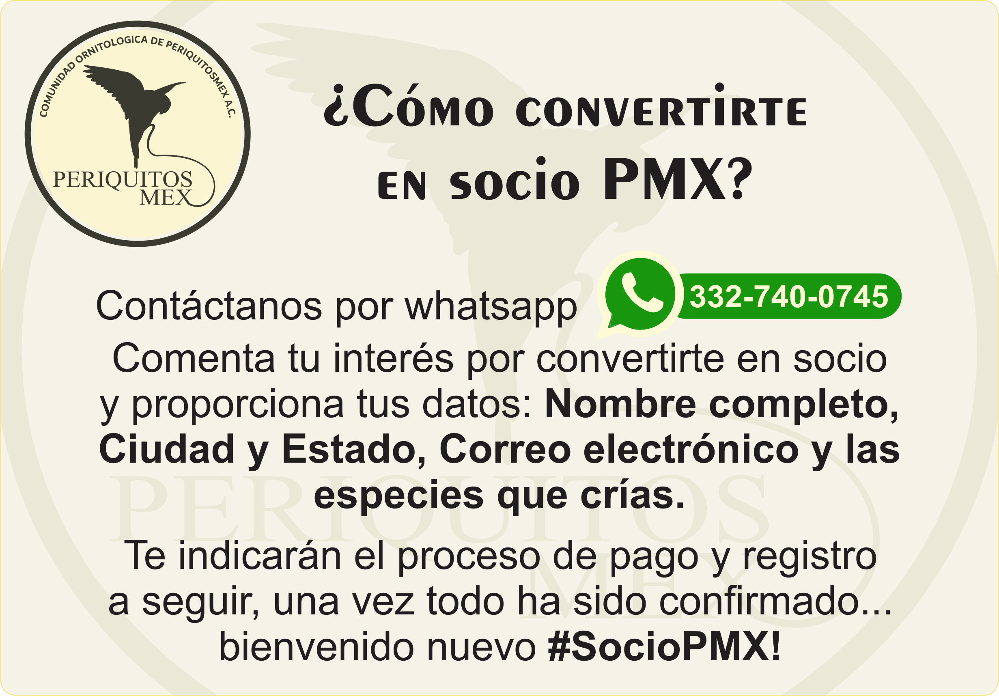

Comunidad Ornitológica de PeriquitosMex A.C.
PeriquitosMex es una asociación ornitológica basada en la fraternidad entre criadores, respeto, responsabilidad social, valores éticos y sentido humano, todo esto con la idea de formar una fuerte comunidad de criadores que promuevan la cultura de la crianza selectiva y sustentable de aves de ornato en México, apoyar en la conservación y protección de especies y educar sobre temas relacionados a la ornitología y cuidado de las aves.
Ser socio PMX require compromiso de apoyo y participación en actividades generadas desde la asociación. A lo largo del año, los grupos que conforman parte de la familia PeriquitosMex hacen eventos en diferentes localidades del país en donde cualquier criador de cualquier asociación puede participar, de la misma forma PeriquitosMex genera actividades online como conferencias, charlas didácticas con profesionales y especialistas en diversos temas, se crean y promueven rifas, entre otras actividades.
Al ser socio registrado se te otorgan algunos beneficios, entre los cuales destacan:
- Credencial de Socio PMX.
- Número único y permanente de criador.
- Constancia digital de membresía.
- Participar en las convocatorias para ordenar anillos de la asociación con tu número de criador grabado.
- Acceso temprano/anticipado a contenido generado desde PeriquitosMex.
- Adquisición de la Revista Ornitológica PeriquitosMex a un precio preferencial.
- Participación en rifas exclusivas para Socios PMX.
- Acceso a descuentos de proveedores autorizados PMX.
